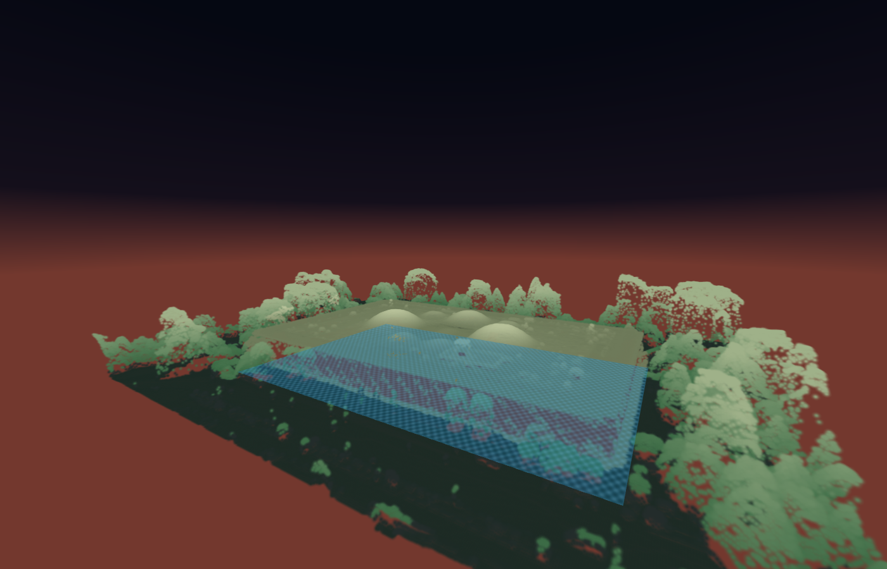
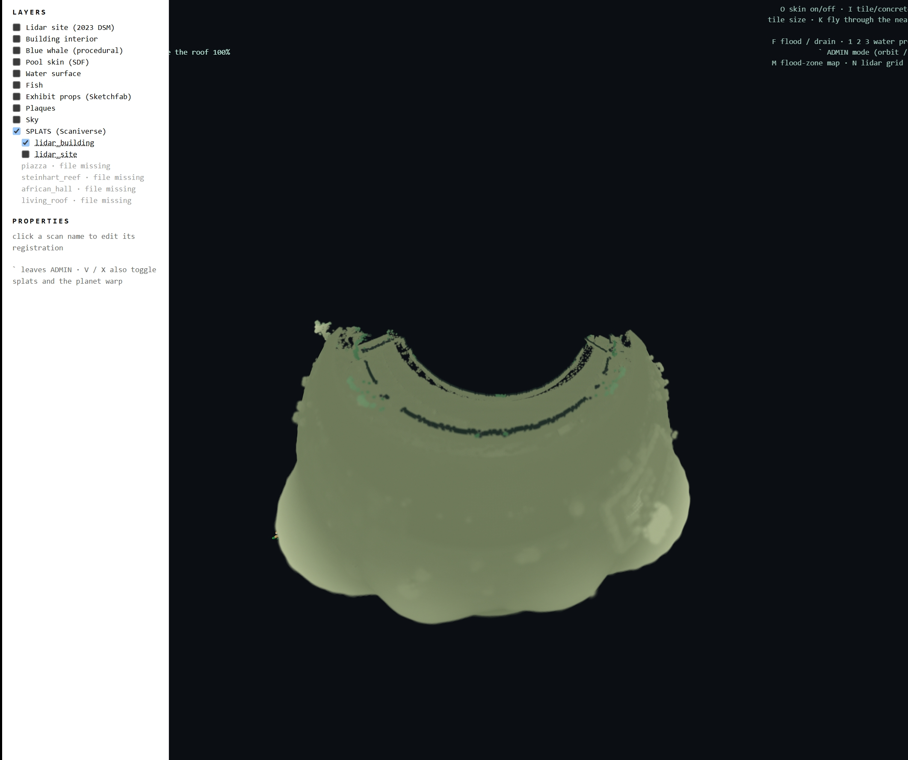
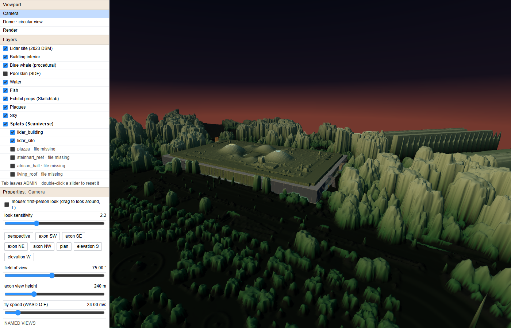
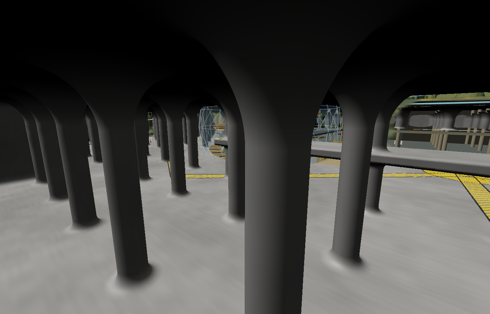
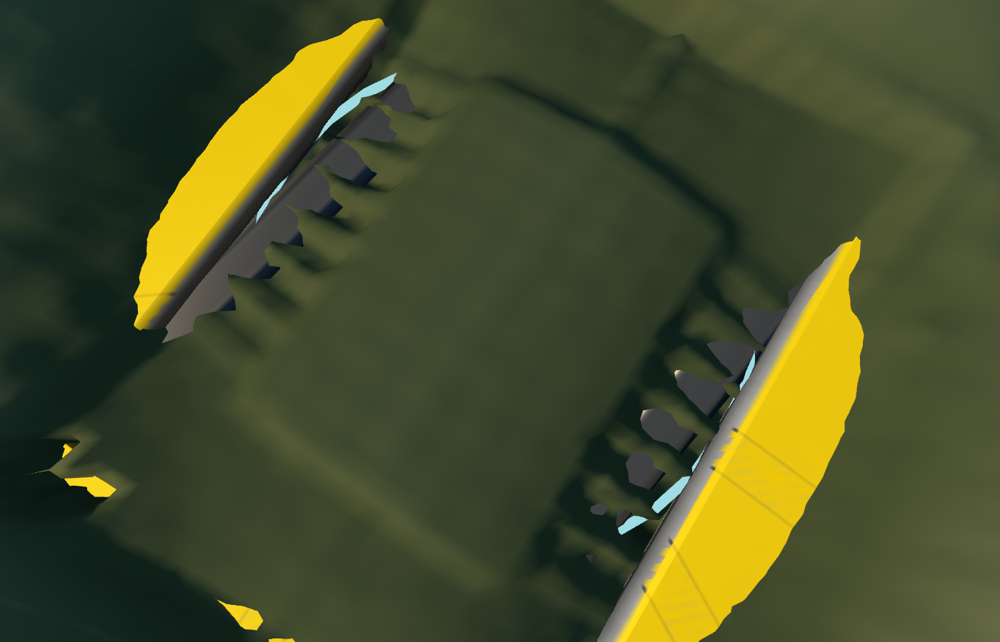
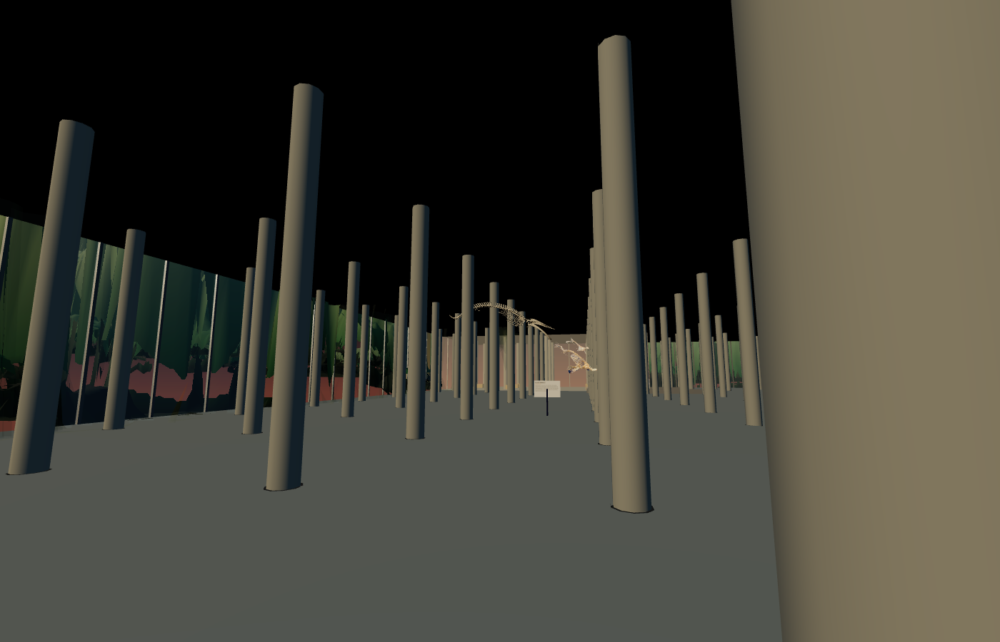
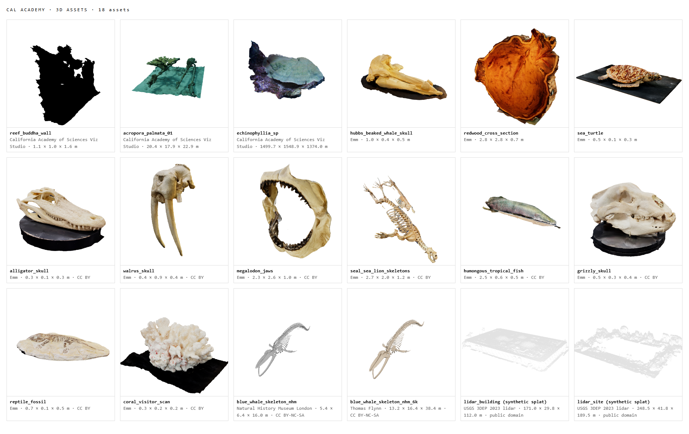
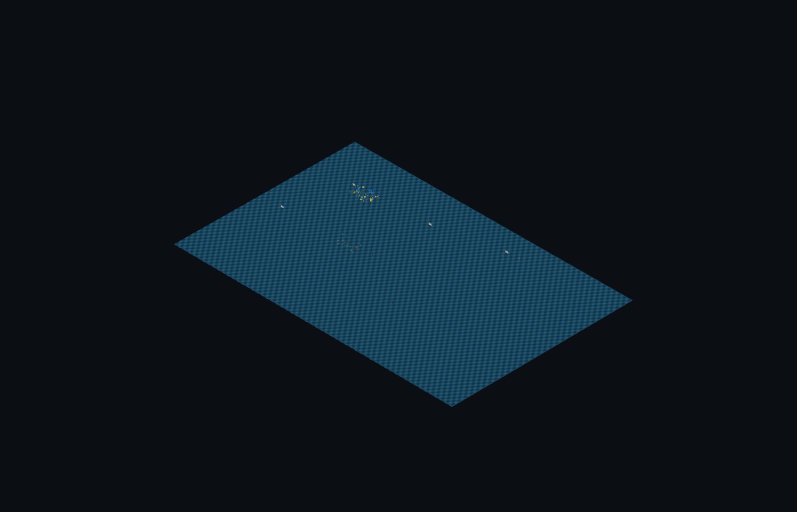
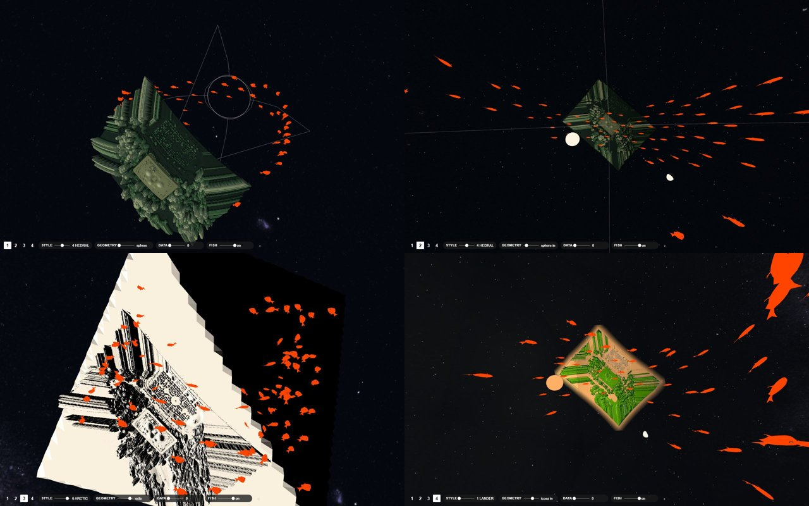
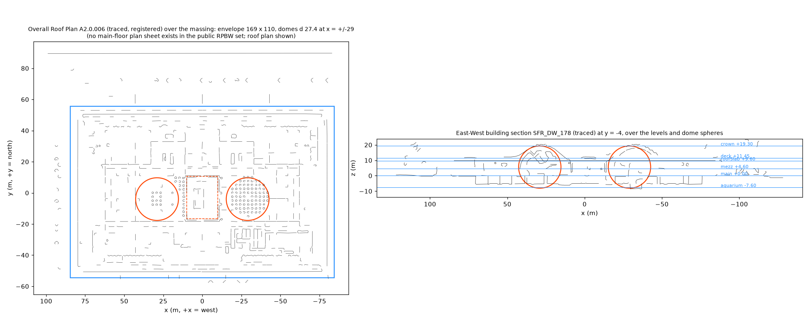

| ■ | ep3 repo found + cloned | branch claude/vibrant-hypatia-fdw8wx · Documents\Claude\ep3 |
| ■ | game runs · three r187 + Spark 2.4 | 35–49 fps on the Intel Arc |
| ■ | ADMIN mode · LAYERS · sliders | ` key · orbit, fly through walls, physics off |
| ■ | splats.js + BLOB PLANET (flipped) | manifest frames game / utm10n / scan |
| ■ | splat cut at the footprint | lidar_building · lidar_site |
| ■ | Sketchfab · 16 props in the halls | CC BY ×14 · CC BY-NC-SA ×2 (whale) |
| ■ | skatepark skin + supergraphics | I cycles tile / concrete / skatepark |
| ■ | Rhino A · mesh + massing + splats | CALACADEMY_SITE_2026_11_07A.3dm |
| ■ | Rhino B · + raw point cloud (EPT) | POINTCLOUD layer, 1.5 M pts |
| ■ | all 3D assets in one folder | CALACADEMY_3D_ASSETS · 16 GLB |
| ■ | lidar DSM mesh → THE VIEW [1] | OBJ + PLY + frame JSON, sent |
| ■ | dataset census · files 15 + 15b | two sessions, pushed |
| ◐ | laptop-bootstrap.sh | USGS throttles to 128 KB/s; tile 2 of 6 |
| ■ | ADMIN panel v3 · Rhino model | Viewport / Layers / Properties: selection |
| ■ | camera: FOV, axon, circular 360° | Camera and Dome rows |
| ◐ | planet of the park quadrant | THE TERRITORY proof live · rasters in prep |
| ■ | RPBW drawings into Rhino D | 20 raster planes + 19 traced vector layers; sections first |
| ■ | park planet rasters a-e for THE TERRITORY | exports/territory, 1 m DSM, 5 m DTM, NAIP, water, labels |
| □ | Scaniverse scans off the phone | SPZ + PLY → Downloads → ingest_captures.py |
| □ | 3D Warehouse massing model | login, save as game/assets/cas_3dwarehouse.glb |